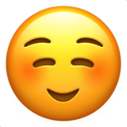
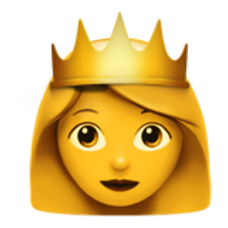
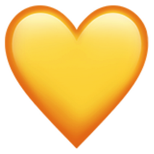
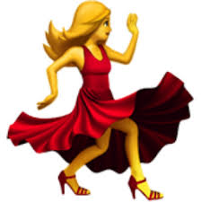

HelloGuyssss!!!
MyPage!



I am Simran and I really do enjoy dancing a lot, it is extremely fun.In fact, it is probably my hobby!In addition to, i prettymuch enjoy all sports, music and art as well
- DANCE - something whcih is incredibly fun yet exercise at the same time.
- SINGING - using your voice to make various melody/tunes. Can be very relaxing as well.
- ART - using ur imagination and creating something new or even recreating something with paints and colouring pencils for example.
- PE AND SPORTS - physical activities which can strengthen yourself, is some excercise but most importantly is very enjoyable and perhaps even a hobby!.
